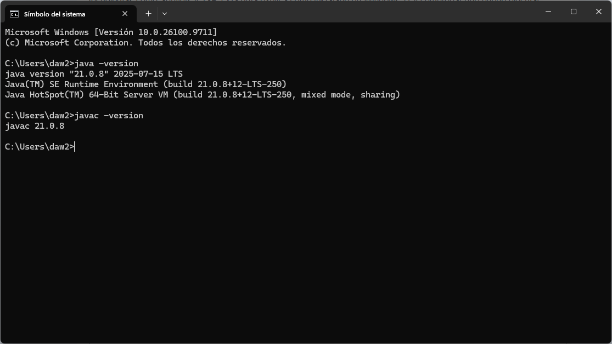
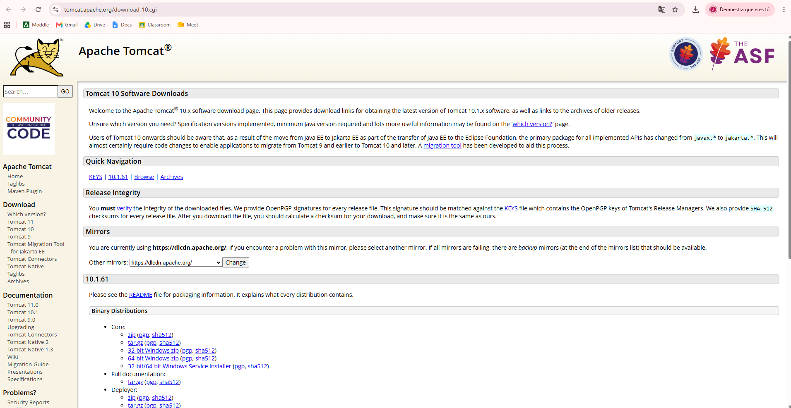
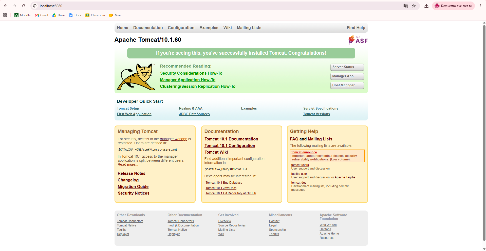
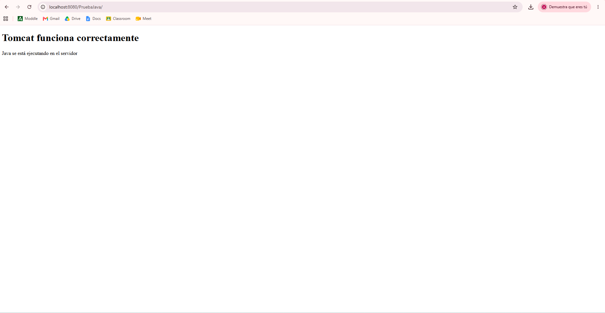

1. ¿Qué es Apache Tomcat?
Apache Tomcat es un servidor web y contenedor de aplicaciones que permite ejecutar aplicaciones web Java mediante tecnologías como Servlets y JSP. Esta guía explica cómo instalarlo en Windows 11 y comprobar que puede ejecutar código Java.
2. Requisitos previos
- Windows 11.
- Conexión a Internet para descargar el software.
- Java JDK 21. Tomcat 10.1 requiere Java 11 o una versión posterior.
Instalar y comprobar Java
- Descarga el JDK desde la página oficial de Eclipse Temurin. Selecciona JDK 21 para Windows x64.
- Ejecuta el instalador y completa la instalación.
- Abre el Símbolo del sistema (CMD) y ejecuta:
java -version
javac -version
Los comandos deben mostrar la versión instalada. Si no se reconocen, configura las variables de entorno
de Java: crea JAVA_HOME con la ruta de la carpeta del JDK y añade
%JAVA_HOME%\\bin a la variable Path. Abre un CMD nuevo y vuelve a comprobar
los comandos.

3. Descargar Apache Tomcat
- Abre la página oficial de descargas de Apache Tomcat 10.
- Busca la versión 10.1 y el apartado de distribuciones binarias para Windows.
- Descarga el instalador de Windows con extensión
.exe.

4. Instalar y configurar Tomcat
- Ejecuta el archivo
.exedescargado y acepta la licencia. - Mantén los componentes predeterminados del asistente.
- Cuando solicite el puerto HTTP, utiliza
8080, salvo que esté ocupado. - Cuando solicite Java, indica la carpeta donde está instalado el JDK, si no se detecta automáticamente.
- Selecciona la carpeta de instalación y termina el asistente. Inicia el servicio de Tomcat si el instalador ofrece esa opción.
Comprobar que el servidor está iniciado
Abre un navegador y visita:
http://localhost:8080/Si aparece la página de bienvenida de Apache Tomcat, el servidor está funcionando.

5. Ejecutar código Java mediante JSP
- Dentro de la carpeta de instalación de Tomcat, abre
webapps. - Crea una carpeta llamada
PruebaJava. - Dentro, crea un archivo llamado
index.jsp. Comprueba que no termine en.txt. - Copia este contenido en el archivo y guárdalo:
<%@ page contentType="text/html; charset=UTF-8" pageEncoding="UTF-8" %>
<!DOCTYPE html>
<html lang="es">
<head>
<meta charset="UTF-8">
<title>Prueba Java</title>
</head>
<body>
<h1>Tomcat funciona correctamente</h1>
<%
String mensaje = "Java se está ejecutando en el servidor";
%>
<p><%= mensaje %></p>
</body>
</html>Abre esta dirección en el navegador:
http://localhost:8080/PruebaJava/Debe aparecer el encabezado «Tomcat funciona correctamente» y el mensaje generado mediante código Java. Esto comprueba que Tomcat está ejecutando una página JSP.
